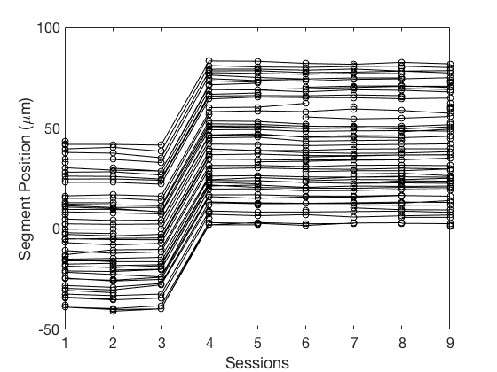

Contents
- Introduction
- Preliminaries
- Loading a map
- Getting help
- Using the default plot structure
- Example 1, plotting one stat versus session number
- Example 1.1, plotting one stat versus days
- Example 1.2, one stat versus days as percent change of session 3
- Example 1.3, get the mean/sd/se/n for each session
- Example 1.4, Check if a stat name is a valid stat
- Example 2, Plot 2 stats from 2 different channels
- Example 2.1, Overlay map segment 2 in red
- Example 2.3, plot a single stat for two different sessions
- Example 3, Plotting a cannonical Map Manager map of spine position along tracing.
- Example 3.1, Plot added (green), subtracted (red), and transient (blue)
- Example 4, Pooling a stat across a number of maps
- Example 4.1, Pooling across maps is generalized in dopool.m
- Example 5, Generate segment statistics for all segments in a map
- Example 5.1, calculate autocorrelation for each segment for a single stat
- Example 6, Plot dendritic tracings
- Example 7, Display maximal intensity projection with annotations and tracing
- Example 8, Find notes, errors, and warnings in a map
- Example 9, Add new analysis to a map
% Author; Robert Cudmore % Date: 20170927 % % top todo: % (1) [done] load multiple maps % (2) [done] plot map based on session condition % (3) [done] pool multiple maps using session condition % (4) nearest-neighbor % (5) [done] segment auto-correlation % (6) [done] Append to map stats % % todo: function to plotSpine(session, spineIdx) % todo: [done] write example to get stat and pDist, sort stat by pDist to get % spines in segment order % todo: [done] example to plot session condition across maps
Introduction
These are examples of how to use the Map Manager toolbox.
The toolbox has three main classes:
mmMap : A Map Manager map mmStack : A Map Manager stack mmPlot : Utility class to plot maps and stacks
Please see mmPlot.plotStat() for interactive plots that respond to mouse clicks.
Preliminaries
% Change into examples directory cd('/Users/cudmore/Dropbox/matlab/examples'); addpath('..') % Set default plot look and feel set(0,'DefaultLineMarkerSize',7); set(0,'defaultAxesFontSize',16);
Loading a map
mapPath = 'd:/Users/cudmore/MapManagerData/Richard/rr30a'; % Windows mapPath = '/Users/cudmore/Dropbox/MapManagerData/richard/rr30a'; % Mac OS myMap = mmMap(mapPath);
Loaded map rr30a with 9 sessions in 3.011271 seconds.
Getting help
All classes and functions have help
help mmMap
mmMap - A class to load, extract, and analyze annotations in a Map Manager map.
To construct a mmMap object:
myMap = mmMap(mapPath)
To get a default plot struct
ps = mmMap.defaultPlotStruct()
mmMap Properties:
mapName - Name of the map, same as enclosing folder name
mapPath - Path to map folder used in constructor
numChannels - Number of color channels in each stack
numSessions - Number of sessions in the map
numMapSegments - Number of segments in the map
mapNV - Text table of map, rows are labelled with names, columns are sessions
stacks - Array of <a href="matlab:help mmStack">mmStack</a>
Extract Annotations:
GetMapValues(ps) - Get values of annotations from a map
GetMapDynamics(ps) - Get the dynamics (add, subtract, etc.) of each annotaiton.
Utility:
find(stat, findStr) - find annotaitons with notes, errors, and warnings
GetValue_NV(name, session) - Get value from a session in a map
getValidStats() - Return a cell array of valid stat names
isValidStat(stat) - Check if a stat is valid
Add new annotations:
addUserStat(newStatName,newStatValues) - Add a new stat to a map
save() - Save user stats. Please see help for important information.
Plotting:
plot0 - Plot a canonical map manager map of spine position versus session.
plotStat - Plot values of a stat versus sessions or days.
plotStat2 - Plot a stat (or two different stat) for two different session.
plotMaxProject - Plot the maximal intensity projection of a stack overlaid with tracing and annotations.
<a href="matlab:methods('mmMap')">List methods</a>, <a href="matlab:properties('mmMap')">properties</a>
Reference page in Doc Center
doc mmMap
Using the default plot structure
Throughout these examples we will use a structure to define parameters. Get the default plot structure using mmMap.defaultPlotStruct().
See: help mmMap.defaultPlotStruct()
ps = mmMap.defaultPlotStruct();
help mmMap.defaultPlotStruct
defaultPlotStruct Get a default plot struct used in plotting functions
ps = mmMap.defaultPlotStruct()
Returns:
ps.roitype (str) : Map Manager ROI type, one of {'spineROI', 'otherROI'}
ps.stat (str) : The name of the stat, check if name is valid with xxx()
ps.stattype (str) : '' to infer type as one of {'stackdb', 'int1', 'int2', 'int3'}
ps.channel = (int) : For int stat type, range is [1:numChannels]
ps.session = (int) : Session index [1..numSessions] for a single session, NaN for all
ps.mapsegment = (int) : Map segment index, NaN for all
ps.plotbad = false;
ps.plotintbad = false;
ps.ploterrorwarning = false;
Examples:
ps = mmMap.defaultPlotStruct()
ps = myMap.defaultPlotStruct()
Notes:
- Additional fields are filled in and returnd by plot
functions GetMapValues(ps).
- This method is static and will work the same in the two
examples above.
Example 1, plotting one stat versus session number
See: mmPlot.plotStat()
ps = mmMap.defaultPlotStruct(); ps.stat = 'ubssSum'; % background subtracted spine sume ps.channel = 2; ps = myMap.GetMapValues(ps); figure; plot(ps.sessions,ps.val,'ok', ps.sessions',ps.val','-k'); xlabel('Session'); ylabel('ubssSum'); % or % mmPlot.plotStat(myMap, ps);
Example 1.1, plotting one stat versus days
See: mmPlot.plotStat()
ps = mmMap.defaultPlotStruct(); ps.stat = 'ubsdSum'; %background subtracted dendrite sum ps.channel = 1; ps.mapsegment = NaN; % set to NaN for all ps = myMap.GetMapValues(ps); figure; plot(ps.days,ps.val,'ok', ps.days',ps.val','-k'); xlabel('Days'); ylabel([ps.stat ' ch' num2str(ps.channel)]); % or % mmPlot.plotStat(myMap, ps, 'xAxis', 'days'); help mmPlot.plotStat
Plot a map stat
mmPlot.plotStat(myMap, ps, 'Norm', '%', 'NormSession', 2, 'xAxis', 'days');
Parameters:
myMap (mmMap object) :
ps (struct) : mm plot struct
Optional parameters
'Norm' (str) : '%' | 'Abs'
'NormSession' (int) : 1..myMap.numSessions
'xAxis' (str) : 'sessions' | 'days'
Example 1.2, one stat versus days as percent change of session 3
See: mmPlot.mapPlotNorm()
ps = mmMap.defaultPlotStruct(); ps.stat = 'ubssSum'; ps.channel = 2; ps.mapsegment = 1; % set to NaN for all ps = myMap.GetMapValues(ps); normSession = 3; percentChange = bsxfun(@rdivide, ps.val, ps.val(:,normSession)) * 100; %absoluteChange = bsxfun(@subtract, ps.val, ps.val(:,normSession)); figure; plot(ps.days, percentChange, 'ok', ps.days',percentChange','-k'); xlabel('Days'); ylabel(['% Change ' ps.stat ' ch' num2str(ps.channel)]); % or % mmPlot.plotStat(myMap, ps, 'Norm', '%', 'NormSession', normSession);
Example 1.3, get the mean/sd/se/n for each session
ps = mmMap.defaultPlotStruct(); ps.stat = 'ubssSum'; ps.channel = 2; ps.mapsegment = NaN; % set to NaN for all ps = myMap.GetMapValues(ps); the_mean = mean(ps.val,'omitnan'); the_std = std(ps.val,'omitnan'); the_count = sum(~isnan(ps.val)); the_se = the_std ./ sqrt(the_count-1); % cludge to get days the_days = mean(ps.days, 'omitnan'); % plot grayLevel = 0.7; figure; plot(ps.days, ps.val, 'o', 'Color', [grayLevel,grayLevel,grayLevel]); % markers hold on; plot(ps.days',ps.val','-', 'Color', [grayLevel,grayLevel,grayLevel]); % lines eh = errorbar(the_days,the_mean, the_se); % mean +/- standard error eh.MarkerFaceColor = 'b'; eh.LineWidth = 3; hold off; xlabel('Days'); ylabel(ps.stat);
Example 1.4, Check if a stat name is a valid stat
myStat = 'ubssSum'; isValid = myMap.isValidStat(myStat); if isValid disp([myStat ' is a valid stat']); else disp([myStat ' is NOT a valid stat']); end myStat = 'badstat'; isValid = myMap.isValidStat(myStat); if isValid disp([myStat ' is a valid stat']); else disp([myStat ' is NOT a valid stat']); end % get names of all valid stats %[validstats, ignor] = myMap.getValidStats();
ubssSum is a valid stat badstat is NOT a valid stat
Example 2, Plot 2 stats from 2 different channels
xps = mmMap.defaultPlotStruct(); xps.mapsegmentid = NaN; % set to NaN for all xps.stat = 'ubssSum'; % background subtracted spine sum xps.channel = 2; xps = myMap.GetMapValues(xps); yps = xps; % make sure they match (e.g. mapsegmentid) yps.stat = 'ubsdSum'; % background subtracted dendrite sum yps.channel = 1; yps = myMap.GetMapValues(yps); figure; plot(xps.val, yps.val,'ok'); xlabel([xps.stat ' ch' num2str(xps.channel)]); ylabel([yps.stat ' ch' num2str(yps.channel)]); % or % mmPlot.plotStat2(myMap, xps, yps);
Example 2.1, Overlay map segment 2 in red
This is useful to see the distribution of one segment in the context of all other segments
xps.mapsegment = 2; xps = myMap.GetMapValues(xps); yps.mapsegment = 2; yps = myMap.GetMapValues(yps); hold on; plot(xps.val, yps.val, 'or', 'MarkerFaceColor', 'r'); hold off;
Example 2.3, plot a single stat for two different sessions
See: mmPlot.mapPlotSession() This is useful to see how stats evolve over time and can be used to examine percent or absolute change
ps = mmMap.defaultPlotStruct(); ps.stat = 'ubssSum'; ps.channel = 2; ps = myMap.GetMapValues(ps); % ps.val has ps.stat for all sessions xSession = 2; ySession = 5; plot(ps.val(:,xSession), ps.val(:,ySession), 'ok'); xlabel([ps.stat ' session ' num2str(xSession)]); ylabel([ps.stat ' session ' num2str(ySession)]); % or if 0 xps = mmMap.defaultPlotStruct(); xps.stat = 'ubssSum'; xps.channel = 2; xps.session = 2; yps = mmMap.defaultPlotStruct(); yps.stat = 'ubssSum'; yps.channel = 2; yps.session = 5; mmPlot.plotStat2(myMap, xps, yps); end % Homework: Fit a line to this session plot to see if the stat changes between sessions.
Example 3, Plotting a cannonical Map Manager map of spine position along tracing.
ps = mmMap.defaultPlotStruct(); ps.mapsegment = 1; mmPlot.plot0(myMap, ps)
ans =
struct with fields:
mapName: 'rr30a'
roitype: 'spineROI'
stat: 'pDist'
stattype: ''
channel: 1
session: NaN
mapsegment: 1
plotbad: 0
plotintbad: 0
ploterrorwarning: 0
val: [1513×9 double]
sessions: [1513×9 double]
days: [1513×9 double]
stackdbidx: [1513×9 double]
 Example 3.1, Plot added (green), subtracted (red), and transient (blue)
% get map dynamics ds = mmMap.defaultPlotStruct(); ds = myMap.GetMapDynamics(ds); % get a map stat ps = mmMap.defaultPlotStruct(); ps.stat = 'pDist'; %'ubssSum'; ps.mapsegment = 1; % set to NaN for all ps = myMap.GetMapValues(ps); % massage some things [m,n] = size(ps.val); % GetMapValues() and GetMapDynamics() return the same size yAdd = nan(m,n); yAdd(ds.added==1) = ps.val(ds.added==1); ySub = nan(m,n); ySub(ds.subtracted==1) = ps.val(ds.subtracted==1); yTransient = nan(m,n); yTransient(ds.transient==1) = ps.val(ds.transient==1); % plot plot(ps.sessions, ps.val, 'ok', 'MarkerFaceColor', 'k', 'MarkerEdgeColor', 'k'); hold on; plot(ps.sessions', ps.val', '-k'); hold on; plot(ps.sessions, yAdd, 'og', 'MarkerFaceColor', 'g', 'MarkerEdgeColor', 'g'); plot(ps.sessions,ySub,'or', 'MarkerFaceColor', 'r', 'MarkerEdgeColor', 'r'); plot(ps.sessions,yTransient,'ob', 'MarkerFaceColor', 'b', 'MarkerEdgeColor', 'b'); hold off; xlabel('Session') ylabel('Segment Position (\mum)'); % or % todo: need to add dynamics colors to mmPlot
Example 4, Pooling a stat across a number of maps
See /examples/poolingmaps.m
% poolingmaps.m is a script to pool across a number of maps. % It uses session conditions {'c*', 'c2', 'e*'} poolingmaps
Loading map 1 of 6 /Users/cudmore/Dropbox/MapManagerData/richard/rr30a
Loaded map rr30a with 9 sessions in 2.993500 seconds.
Loading map 2 of 6 /Users/cudmore/Dropbox/MapManagerData/richard/rr49c
Loaded map rr49c with 6 sessions in 1.910100 seconds.
Loading map 3 of 6 /Users/cudmore/Dropbox/MapManagerData/richard/rr50b
Loaded map rr50b with 10 sessions in 3.086360 seconds.
Loading map 4 of 6 /Users/cudmore/Dropbox/MapManagerData/richard/rr52c
Loaded map rr52c with 13 sessions in 3.637286 seconds.
Loading map 5 of 6 /Users/cudmore/Dropbox/MapManagerData/richard/rr58b
Loaded map rr58b with 15 sessions in 4.858099 seconds.
Loading map 6 of 6 /Users/cudmore/Dropbox/MapManagerData/richard/rr58c
Loaded map rr58c with 10 sessions in 2.745708 seconds.
GetMapValuesCond() map:rr30a cond:c* taking mean of sessions 1 3 5
GetMapValuesCond() map:rr30a cond:c2 taking mean of sessions 3
GetMapValuesCond() map:rr30a cond:e* taking mean of sessions 6 8
GetMapValuesCond() map:rr49c cond:c* taking mean of sessions 2 3 4
GetMapValuesCond() map:rr49c cond:c2 taking mean of sessions 3
GetMapValuesCond() map:rr49c cond:e* taking mean of sessions 5 6
GetMapValuesCond() map:rr50b cond:c* taking mean of sessions 7 8
GetMapValuesCond() map:rr50b cond:c2 taking mean of sessions 8
GetMapValuesCond() map:rr58b cond:c* taking mean of sessions 10
GetMapValuesCond() map:rr58c cond:c* taking mean of sessions 6
myPool =
struct with fields:
poolMaps: [6508×1 double]
poolVal: [6508×3 double]
poolCondNum: [6508×3 double]
Example 4.1, Pooling across maps is generalized in dopool.m
help dopool
doPool()
Pool a stat across maps in a list by taking mean across each spine run
only including sessions in a list of session conditions.
Usage:
ret = doPool(mapList, stat, channel, condList)
Parameters:
mapList (vector of mmMap) :
stat (Str) :
channel (int) :
condList (vector of string) :
Returns:
ret.poolMaps (string column vector) :
ret.poolVal (float matrix) : rows are ALL runs from maps in mapList.
Columns are each condition in condList
ret.poolCondNum (float matrix) : same shape as ps.poolCondNum
Example:
myStat = 'ubssSum';
myChannel = 2;
myCondList = {'c*', 'c2', 'e*'};
myPool = doPool(myMapList, myStat, myChannel, myCondList)
plot(myPool.poolCondNum, myPool.poolVal, 'ok');
Example 5, Generate segment statistics for all segments in a map
% See segmentStats.m for a template function to write your own segment analysis ps = mmMap.defaultPlotStruct(); ps.stat = 'ubssSum'; ps.channel = 2; % The segmentanalysis() function will call segmentstats.m for each segment % in the map. % % In this case there are 45 segments! mySegmentStats = myMap.segmentanalysis(ps, 'segmentStats'); % plot results for i = 1:myMap.numMapSegments eh = errorbar([mySegmentStats(i,:).mean], [mySegmentStats(i,:).se], 'o-'); % mean +/- standard error eh.LineWidth = 3; eh.DisplayName = ['Map Segment ' num2str(i)]; hold on; end xlabel('Session') ylabel(['Segment Mean of ' myStat]); legend('show'); hold off;
Example 5.1, calculate autocorrelation for each segment for a single stat
This is simple, we make a new matlab function (in a .m file) following the prototype of segmentStats() in segmentStats.m. In this function we (1) sort val using pDist and (2) use autocorr function at lag 0 (Requires the Econometrics toolbox)
Example 6, Plot dendritic tracings
todo: rewrite mmStack.getTracing() to take ps and return ps.tracing
% look at first 5 rows in linedb table myMap.stacks(1).linedb(1:5,:) % In this example we are calling getTracing(). A member function of mmStack (not mmMap). % Each mmMap has a list of mmStack in myMap.stacks stackSegment = NaN; %NaN for all session = 1; tracing = myMap.stacks(session).getTracing(stackSegment); plot(tracing(:,1), tracing(:,2), '.k', 'MarkerSize', 25); xlabel('\mum'); ylabel('\mum'); % Have a look at the help help mmStack.getTracing
ans =
5×22 table
node type x y z zFloor radius radiusFit prevNode ID gID tx ty tz sDist pDist Filament SetID GroupID sDist3d pDist3d Var22
____ ____ _____ ____ __ ______ ______ _________ ________ __ ___ ___ ___ ___ _____ _______ ________ _____ _______ _______ _______ _____
NaN NaN 42.48 28.8 31 31 NaN NaN -1 1 NaN NaN NaN NaN 0 -41.398 NaN NaN NaN 0 -42.243 NaN
NaN NaN 42.6 28.8 31 31 NaN NaN 0 1 NaN NaN NaN NaN 0.12 -41.278 NaN NaN NaN 0.12 -42.123 NaN
NaN NaN 42.72 28.8 31 31 NaN NaN 1 1 NaN NaN NaN NaN 0.24 -41.158 NaN NaN NaN 0.24 -42.003 NaN
NaN NaN 42.84 28.8 31 31 NaN NaN 2 1 NaN NaN NaN NaN 0.36 -41.038 NaN NaN NaN 0.36 -41.883 NaN
NaN NaN 42.96 28.8 31 31 NaN NaN 3 1 NaN NaN NaN NaN 0.48 -40.918 NaN NaN NaN 0.48 -41.763 NaN
Get the x/y/z coordinates of a segment tracing.
tracing_xyz = myStack.getTracing(stacksegment)
Parameters:
ps.stacksegment (int) : nan for all
Returns:
tracing (mx3 matrix of float) : m is number of points in all
tracings in stack
Example 7, Display maximal intensity projection with annotations and tracing
See: mmPlot.mapPlotImage()
mySession = 1; myChannel = 2; myMap.plotMaxProject(mySession, myChannel); % or % plotMaxProject(myMap,ps,showAnnotations, showLines);
mmStack.loadStack() rr30a_s0 loading 70 slices...

Example 8, Find notes, errors, and warnings in a map
result1 = myMap.find('note', 'Dim?'); disp(result1(1:5,:)) % view table of first 5 results % Other examples % result2 = myMap.find('note', '*'); % result2(1:5,:) % result2 = myMap.find('error', '*'); % result2(1:5,:) % result3 = myMap.find('warning', '*'); % result3(1:5,:)
session Idx roiType roiTypeNum x y z channel groupID parentID cPnt sDist pDist cAuto cAngle cLine cLineNum cx cy cz cDate cTime mDate mTime cSeconds mSeconds userName note edgeList isDirty isBad dynBad intBad progType madeFrom analParam analResult1 analResult2 analResult3 analResult4 user1 user2 user3 userBool1 userBool2 userBool3 userType bSpineMap bSpineIdx error warning Var51
_______ ___ __________ __________ ______ ______ __ _______ _______ ________ ____ ______ _______ _____ ______ _________ ________ ______ ______ ____ __________ __________ __________ __________ __________ __________ ___________ ______ ________ _______ _____ ______ ______ ________ ________ _________ ___________ ___________ ___________ ___________ _____ _____ _____ _________ _________ _________ ________ _________ _________ _____ _______ _____
1 287 'spineROI' 0 19.033 39.9 32 1 NaN 5 1920 6.0462 -9.8088 0 265.88 'radius1' 1 20.095 39.154 31 2015-10-14 '12:26:18' 2015-12-14 '09:29:34' 3.5277e+09 3.5329e+09 'Nancy Luo' 'Dim?' NaN NaN NaN NaN NaN NaN 1 NaN NaN NaN NaN NaN NaN NaN NaN NaN NaN NaN NaN NaN NaN '' [NaN] NaN
3 74 'spineROI' 0 80.472 26.17 33 1 NaN 1 306 38.406 -2.76 0 280.4 'radius1' 1 80.16 24.47 33 2015-10-07 '12:55:24' 2015-12-14 '09:29:36' 3.5271e+09 3.5329e+09 'Nancy Luo' 'Dim?' NaN NaN NaN NaN NaN NaN 1 NaN NaN NaN NaN NaN NaN NaN NaN NaN NaN NaN NaN NaN NaN [NaN] [NaN] NaN
3 77 'spineROI' 0 60.672 23.12 32 1 NaN 1 132 17.29 -23.876 0 33.099 'radius2' 2 59.51 24.755 33.4 2015-10-07 '13:02:54' 2015-12-14 '09:29:36' 3.5271e+09 3.5329e+09 'Nancy Luo' 'Dim?' NaN NaN NaN NaN NaN NaN 1 NaN NaN NaN NaN NaN NaN NaN NaN NaN NaN NaN NaN NaN NaN [NaN] [NaN] NaN
3 78 'spineROI' 0 56.722 22.07 33 1 NaN 1 122 16.04 -25.126 0 121.72 'radius2' 2 58.44 24.85 33 2015-10-07 '13:04:32' 2015-12-14 '09:29:36' 3.5271e+09 3.5329e+09 'Nancy Luo' 'Dim?' NaN NaN NaN NaN NaN NaN 1 NaN NaN NaN NaN NaN NaN NaN NaN NaN NaN NaN NaN NaN NaN [NaN] [NaN] NaN
5 221 'spineROI' 0 31.102 83.143 14 1 NaN 3 1288 22.471 -21.227 0 458.29 'radius2' 2 30.071 83.299 15 2015-10-09 '13:39:55' 2015-12-14 '09:29:38' 3.5272e+09 3.5329e+09 'Nancy Luo' 'Dim?' NaN NaN NaN NaN NaN NaN 1 NaN NaN NaN NaN NaN NaN NaN NaN NaN NaN NaN NaN NaN NaN '' [NaN] NaN
Example 9, Add new analysis to a map
ps = mmMap.defaultPlotStruct(); ps.stat = 'ubssSum'; %'ubssSum'; ps.channel = 2; ps = myMap.GetMapValues(ps); newStatName = 'myNewStat'; [m,n] = size(ps.val); newStatValues = NaN(m,n); newStatValues = ps.val ./ mean(ps.val(~isnan(ps.val))); % ubssSum / mean(ubssSum); newStatName = 'myNewStat'; newStatValues = ps.val; myMap.addUserStat(newStatName, newStatValues); % and then plot the new stat ps = myMap.GetMapValues(ps); ps.stat = newStatName; myMap.plotStat(ps); % or use mmPlot class directly (most functions are static) % mmPlot.plotStat(myMap, ps); % and then save myMap.save(); % now, load the map again and you will have your new stat
mmStack.save() is saving userstat for stack rr30a_s0 file:rr30a_s0_user.txt mmStack.save() is saving userstat for stack rr30a_s1 file:rr30a_s1_user.txt mmStack.save() is saving userstat for stack rr30a_s2 file:rr30a_s2_user.txt mmStack.save() is saving userstat for stack rr30a_s3 file:rr30a_s3_user.txt mmStack.save() is saving userstat for stack rr30a_s4 file:rr30a_s4_user.txt mmStack.save() is saving userstat for stack rr30a_s5 file:rr30a_s5_user.txt mmStack.save() is saving userstat for stack rr30a_s6 file:rr30a_s6_user.txt mmStack.save() is saving userstat for stack rr30a_s7 file:rr30a_s7_user.txt mmStack.save() is saving userstat for stack rr30a_s8 file:rr30a_s8_user.txt